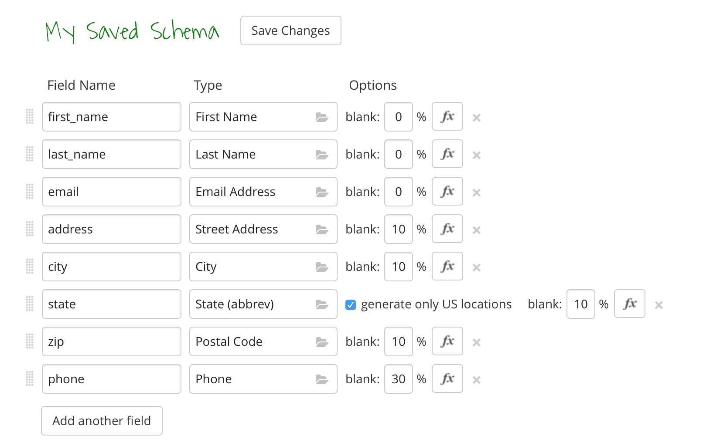
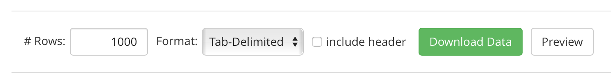
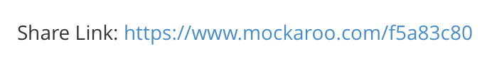

Many of us have had to develop apps on the LAMP stack, and frameworks like Slim make the process of routing and API design easy. However, when it comes to testing your web application, creating a realistic test scenario can be difficult. Traditionally, developers will hastily INSERT a small handful of users into their database to test authentication and inter-user relations. But this small dataset is hardly realistic, and with some online tools, command-line tweaks, and a SQL statement, we can generate much larger user datasets easily.
This tutorial makes a few assumptions about your server setup and your preexisting knowledge:
mysql clientAlso, we'll be generating data for our own schema, but you can modify the instructions for your own. If you just want to follow along for learning purposes, you can use the same schema by executing the following:
CREATE TABLE `tutorial_table` (
`id` int NOT NULL AUTO_INCREMENT,
`first_name` varchar(80),
`last_name` varchar(80),
`email` varchar(255),
`address` varchar(255),
`city` varchar(80),
`state` varchar(80),
`zip` varchar(80),
`phone` varchar(32),
PRIMARY KEY(`id`)
);For data generation, we will use an online tool called Mockaroo. You'll need to create an account so that when you define your data generation settings, they'll be saved to a URL.

Once you've created your account, you can prepare your schema on Mockaroo. In a way, this mirrors your SQL schema, but with added context. For example, you define what type of data belongs in a given column, and to make your test data less "perfect," you can let data be NULL some of the time.
In the above image, we name all of the fields, set the proper types, and set some fields to be blank some of the time. In Mockaroo, when you set fields with the same blank percentage, they'll be blank together. So it makes sense that the address would either be:
We've also set the phone number to be missing 30% of the time.

Note lastly the output settings. We're generating 1,000 rows in Tab-Delimited format. Mockaroo allows several other formats, but MySQL allows us to import tab-delimited data natively. Importantly, you should uncheck the include header box, because as far as MySQL knows, that header row is just more data.
Mockaroo's free accounts are limited to 1,000 rows, but if you need more, you can just switch to a Paid account. For this demonstration we'll stick to a free account.
Now Save Changes by clicking the button at the top, and at the bottom of the page, there should now be a link to this Mockaroo Schema that looks something like this:

Before we can generate data from this schema and import it into MySQL, we need to tweak the settings in a Ubuntu security program called AppArmor that limits MySQL's access to the filesystem. Otherwise your attempts to import your data file into MySQL will mysteriously fail with a "File Not Found" error. To give MySQL access to the /tmp folder, we're going to edit its AppArmor configuration file.
On your server/guest system, use your preferred text editor to open /etc/apparmor.d/usr.sbin.mysqld. Once you're editing the file, add the line:
/tmp/** rwkThen save and quit. Now we need to reload AppArmor for the change to take effect. In your server/guest command line, enter:
sudo /etc/init.d/apparmor reloadNow /tmp is visible and accessible by MySQL.
Back in Mockaroo, pull up your Schema again. Confirm that Rows is set to 1000, the Format is "Tab-Delimited," and include header is unchecked. Then click Download Data.
The generated data will have downloaded to your local/host machine in a .txt file. You need to move it to your server/guest. If you're using Vagrant to manage your server as a VM, just drop the text file into the shared folder (/vagrant, or its corresponding location on your host). Otherwise, put it on your server over FTP or your preferred protocol.
You may want to look at the data file (cat) to confirm that the rows are line-delimited, fields tab-delimited, and that there is no header on the first line (with field names instead of actual data).
Now, in your server/guest command line, go to the directory where you moved the data file. In Vagrant, this should be /vagrant. We will copy the file over to /tmp for MySQL to access it. Assuming you named the file data.txt:
cp data.txt /tmp/data.txtNow that the data is where we need it, fire up the MySQL client:
mysql -u <your_user> -p <your_db>And finish logging in. Do make sure you have either this tutorial's schema or your own in place already.
We'll be using the LOAD DATA directive in SQL to load a tab-delimited file straight into the desired table. Normally this is a short command, but since our table handles the id field as an automatically incrementing primary key, we've left it out of the data file, and much like a partial INSERT statement, we need to explicitly list the fields we're actually including. This is what our statement looks like:
LOAD DATA INFILE '/tmp/data.txt'
INTO TABLE `tutorial_table`
(
first_name,
last_name,
email,
address,
city,
state,
zip,
phone
);